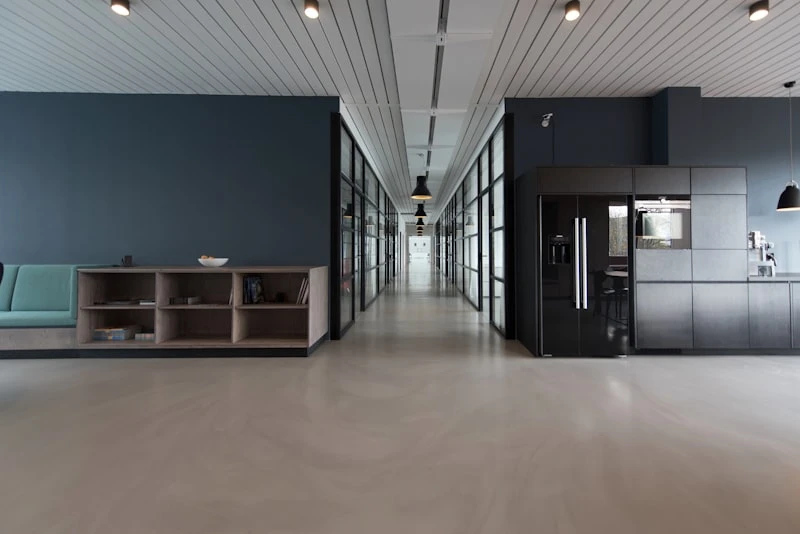

Our Blog
Insights, macroeconomic analysis, and algorithmic research from our quantitative team.
The Quantum Shift in Algorithmic Hedging
How neural networks are predicting market volatility 400 milliseconds faster than traditional stochastic models.
Marcus Sterling
Oct 12, 2026

Navigating the New Interest Rate Regime
An analysis of central bank policies and their impact on global fixed-income portfolios over the next decade.
Dr. Sarah Chen
Institutional Adoption of Digital Assets
Why family offices are increasingly allocating 2-5% of their portfolios to layer-1 infrastructure and Bitcoin.
Alexander Vance

Structuring Generational Wealth Transfer
Trusts, foundations, and tax-optimized vehicles required for seamless legacy transitions in 2027.
Elena Rostova
Strategic Allocation in Volatile Markets
How diversifying across traditional and alternative asset classes mitigates downside risk while capturing long-term yields.
Marcus Sterling
Modern Approaches to Physical Asset Valuation
Leveraging real-time data and drone technology to accurately assess the value and depreciation of physical infrastructure assets.
Dr. Sarah Chen

Extending Asset Lifecycle with IoT
Implementing Internet of Things (IoT) sensors to monitor wear-and-tear and significantly extend the productive lifespan of capital assets.
Alexander Vance
Industry Insights

Reducing Risk in Built Assets
Detail Blog Explore articles covering asset management best practices, data-driven strategies, and long-term performance optimization. Thought leadership and practical guidance...
Data-Driven Infrastructure
Use data insights to manage infrastructure more effectively

Preventive vs Predictive Maintenance
Compare maintenance strategies to reduce risk and operational costs
Optimizing Asset Lifecycle Performance
Improve asset reliability and long-term value through lifecycle-based strategies
The STACKLY Brief
Receive our exclusive monthly macroeconomic insights directly to your inbox. Trusted by over 10,000 institutional investors.
No spam. Unsubscribe at any time.